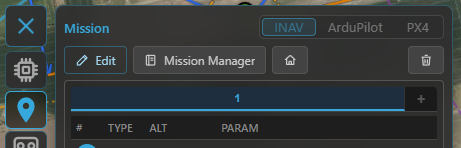
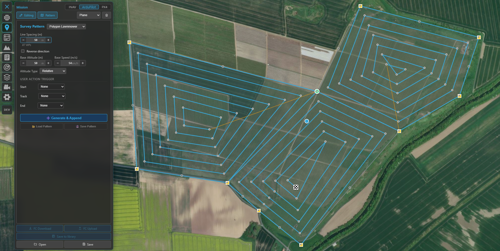
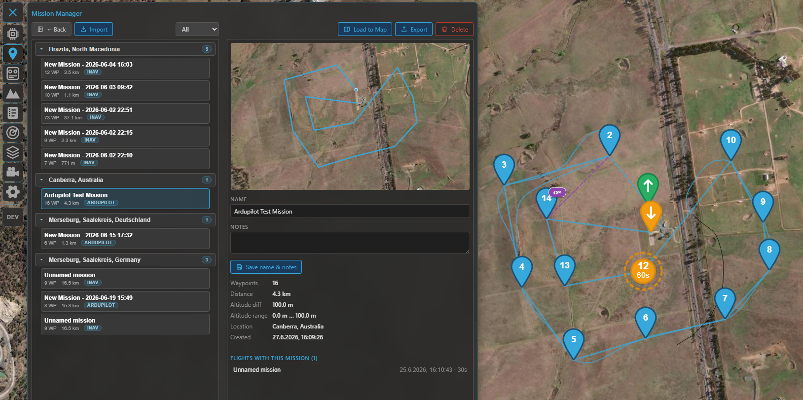

Missions¶
Kite's mission planner lets you draw a flight plan on the map, send it to the aircraft, and read one back. It speaks three flight stacks — INAV, ArduPilot and PX4 — and adapts the editor, the icons and the file format to whichever one is active. This guide covers the shared concepts and where the three differ; it doesn't drill into every individual waypoint type.
Open the planner from the Mission tool on the navigation rail.
Choosing the flight stack¶
The planner always targets one stack at a time:
- Connected — the stack is locked to the connected aircraft (INAV / ArduPilot / PX4), detected automatically. You can't switch it by hand while connected.
- Offline — pick the stack yourself with the INAV / ArduPilot / PX4 selector so you can plan before you fly. For ArduPilot there's also a vehicle-type dropdown (Plane / Copter / QuadPlane / Rover / Boat / Sub), which tunes the available commands and icons.
If you connect to a different stack while a plan is loaded, Kite asks before discarding it.

Pick the flight stack (and, for ArduPilot, the vehicle type) when planning offline; it locks to the connected aircraft once you're linked.
The core idea: main waypoints vs modifiers¶
Whatever the stack, a mission is an ordered list of items that fall into two kinds:
- Main waypoints have a position on the map — fly here, hold here, land here.
- Modifiers have no position of their own. They change the sequence or behaviour at that point.
How each stack names them:
- INAV — main: Waypoint, PosHold, Land, Set POI; modifiers: Jump (loop back N times), RTH (return to home), Set Heading.
- ArduPilot / PX4 — the items are MAVLink commands: the navigation commands (take-off, waypoint, loiter, land, RTL…) are the main steps, and DO_ / CONDITION_ commands are the modifiers. Commands that don't apply to the selected vehicle type get a soft ⚠ warning — never blocked, just flagged.
The split is the same on all three, and it's what shapes the list and the map (below).
How it's displayed¶
In the waypoint list¶
- Main waypoints get a numbered round badge (1, 2, 3 …).
- Modifiers are shown indented under the point they follow. Their numbering depends on the stack: INAV leaves modifiers unnumbered (only main waypoints are counted), while ArduPilot / PX4 number every item sequentially (modifiers included) — each matching how its flight controller counts mission items.
- A Jump is drawn as a repeat badge (↺N) linking back to its target.
On the map¶
Waypoints appear as numbered teardrop markers joined by the route line, with type-specific icons (loiter circles for holds, a take-off / land marker, a Set-POI/ROI eye, a home marker, and so on). The numbers on the map match the list.
Mission summary (footer)¶
Under the list a summary line shows the plan's total distance and climb / descent, plus — when your waypoints set a cruise speed — an estimated flight time. (Without an explicit speed the time is left out rather than guessed from an assumed cruise.) Next to it sit the waypoint count and the provenance / Modified badges (below). This summary reads the same for INAV, ArduPilot and PX4.
Numbering differs between stacks¶
This is the one difference worth remembering:
| Stack | Item 0 | Your waypoints |
|---|---|---|
| INAV | — | numbered 1 … N (modifiers excluded from the count) |
| ArduPilot | Home — a fixed home slot, shown as a home marker, not an editable waypoint | start at 1 |
| PX4 | no home slot — item 0 is already a real waypoint | numbered as the FC lists them |
So on an ArduPilot plan, "waypoint 1" is your first real point and the home item is managed for you (a take-off is anchored on it). On PX4 there's no reserved home item at all.
Altitudes¶
Each waypoint carries an altitude against a reference:
- INAV offers three modes: REL (relative to the home/launch point — the usual default), AMSL (absolute, above mean sea level) and AGL (above ground level / terrain-following). AGL is a planning aid: because INAV itself only stores REL/AMSL, Kite resolves each AGL point to an absolute altitude (using terrain elevation) when the mission is uploaded or exported.
- ArduPilot / PX4 set a MAVLink altitude frame per item — relative (to home), absolute (AMSL) or terrain (terrain-following).
Check your clearance
The Terrain tool plots the ground beneath a planned route so you can sanity-check above-ground clearance before you fly. See it alongside the mission.
Building a mission¶
- Add points by clicking on the map; drag a marker to move it; reorder in the list.
- Edit a point (type, altitude, parameters) from its popup or the list.
- Multi-select (while editing) to act on several waypoints at once:
- In the list: Ctrl/⌘-click rows to toggle them, Shift-click for an inclusive range, or tap a number badge to toggle a single one.
- On the map: tap a marker to toggle it in or out of the selection — no modifier key needed, so it works on touchscreens. Tapping empty map clears the selection.
- With more than one selected, right-click (or long-press) a selected waypoint for Batch
Edit: change the altitude and its reference / frame for the whole selection at once, and
attach an action to every selected waypoint — an INAV user-action flag, or an
ArduPilot / PX4
DO_command (speed change, camera trigger, servo, relay, …) — the same set as the single-waypoint editor's Add modifier. Delete the whole selection in one undoable step from the toolbar. - Works the same on INAV, ArduPilot and PX4.
- Undo / redo (Ctrl+Z / Ctrl+Y, or Ctrl+Shift+Z to redo) and clear are available while editing.
- Survey patterns — generate an area scan instead of placing every leg by hand (see Survey patterns below).

Building a mission: the numbered waypoint list (main waypoints with indented modifiers) and the route on the map.
Survey patterns¶
Instead of placing every leg by hand, the Pattern Generator fills an area with a flight pattern and appends it to the current mission. Turn on Edit mode, then click Pattern, pick a shape, position it on the map (drag the centre / corners / radius handle, or move the polygon vertices), set the parameters, and press Generate & Append.

The Pattern Generator: pick a shape, shape it on the map, set spacing / altitude / actions, then Generate & Append.
| Shape | Pattern |
|---|---|
| Rectangle / Polygon | Back-and-forth zig-zag (lawn striping) across the area |
| Rectangle Lawnmower / Polygon Lawnmower | Concentric inward loops following the outline |
| Circle | Concentric rings, outer → inner |
| Spiral | A single inward spiral |
A concave polygon is handled automatically (the lawnmower splits it into convex pieces).
Defining the area on the map¶
Most of the shaping happens directly on the map:
- Move the whole pattern — drag the centre handle.
- Rectangle — drag a corner to resize.
- Circle / Spiral — drag the radius handle.
- Polygon — drag a yellow corner to move a vertex; click a grey midpoint to add a vertex; to remove one, drag a corner onto the red "Drop here to delete vertex" banner or right-click it (a polygon keeps at least three corners). A self-intersecting shape snaps back.
The pattern settings persist, so you can move the shape and press Generate & Append again to drop another copy elsewhere — each Generate appends to the current mission.
Key parameters¶
- Line spacing — distance between adjacent legs (your camera footprint / desired overlap).
- Altitude and Speed — applied to every generated waypoint.
- Orientation — rotates the pattern; for zig-zags you can rotate the scan lines independently of the shape.
- Turn distance (line patterns) — extends each leg beyond the area so a fixed-wing aircraft has room to turn and line up before the next leg. This is the only part that deliberately reaches outside the area; the shape itself is never enlarged.
- Stay inside area (polygon) — off: the scan crosses gaps in a concave area as one continuous serpentine; on: it fills each connected sub-region without flying across the gaps.
- Pattern-specific: Ring points (circle / spiral), direction / start corner (lawnmower).
Triggering actions along the pattern (cameras, servos, …)¶
How you fire a camera (or a servo / relay) along the pattern depends on the flight stack, because the firmwares model it differently:
| INAV | ArduPilot / PX4 | |
|---|---|---|
| Mechanism | User Action flags UA 1–4 — a per-waypoint bitmask you program on the FC | Action waypoints — real DO_ mission items inserted into the sequence |
| In the panel | Tick UA 1–4 for each slot | Pick a command per slot from a dropdown |
| Choices | Whatever you've mapped UA 1–4 to in INAV | Camera Auto-Trigger, Take Photo, Aux Function, Set / Repeat Servo, Set / Repeat Relay (PX4: its supported subset) |
The slots are the same idea on both: Line Start / Line End for the zig-zag shapes (e.g. start the camera at the beginning of each scan leg, stop it at the end), and Start / Track / End for the loop / ring / spiral shapes (first waypoint / every waypoint / last waypoint).
Mapping run on ArduPilot / PX4
Set Line Start → Camera Auto-Trigger with your trigger distance, and Line End → Camera Auto-Trigger with distance 0 (stop). The camera then fires along each leg and is off during the turns and any gap.
While the generator is open¶
The existing mission stays visible but non-interactive — you can see it to plan where the pattern attaches, but its waypoints can't be dragged or edited until you leave the generator (the same on all three stacks). Generating appends the pattern as a single undo step, so one Ctrl+Z removes the whole pattern. On INAV the 120-waypoint limit is checked, with the option to truncate.
Sending it to the aircraft¶
| Action | INAV | ArduPilot / PX4 |
|---|---|---|
| Upload (GCS → FC) | over MSP | over MAVLink |
| Download (FC → GCS) | over MSP | over MAVLink |
| Save to FC permanently | EEPROM save / load (survives a power cycle) | — (the FC keeps the uploaded mission) |
Up- and downloads show an "x of n" progress counter as the waypoints transfer.
After a download the plan is tagged FC (see provenance below); the mission you see is exactly what the aircraft will fly.
Files & the mission library¶
- Save / load files — INAV uses
.mission(MultiWii XML); ArduPilot and PX4 use.waypoints(the QGroundControl-compatible plain-text format). Kite also imports QGroundControl.planfiles (the only format modern QGC saves, so the usual hand-off in PX4 workflows) — mission waypoints only: QGC pattern items (Survey, Corridor Scan, …) can't be expanded outside QGC and are refused with a clear message, and a plan's embedded geofence/rally sections are ignored. Saving from Kite produces.waypoints, which QGC can open. You can also drag a file onto the map. - Provenance badges tell you where the loaded plan came from — FC (downloaded), FILE (opened from disk) or DB (from the library) — plus a Modified badge once you've edited it. Shown for all three stacks.
The mission library (Mission Manager)¶
Save a plan into Kite's library to reuse it across sessions, then open the Mission Manager to browse them. Missions are grouped by location (named automatically from their coordinates) and can be searched, loaded to the map, exported to a file, or deleted — with a warning when flights still link to a mission you're removing. Saving de-duplicates by content, so re-saving an unchanged plan won't pile up copies. The library is shared across the flight stacks (each mission loads back into the stack it belongs to), and library missions also link to flights in the logbook.

The Mission Manager — your saved missions, grouped by location, ready to load to the map, export or delete.
Multiple missions (INAV)¶
INAV lets you keep several missions (up to nine) and switch between them with the mission tabs — handy for storing alternates. Uploading sends all of them to the flight controller as one combined mission set (and EEPROM save stores the whole set); downloading reads it back and splits it into the separate tabs again — so a multi-mission round-trips cleanly. ArduPilot and PX4 work with a single mission.
Staying clear of airspace¶
If the aircraft has geozones (INAV) or a geofence (ArduPilot / PX4) set, Kite can check your plan against them and warn about waypoints that breach a no-fly area. See Safety.
Where to go next¶
- Watch the mission fly: Telemetry & display.
- Keep clear of terrain and airspace: Safety.
- 3D preview of the route: 3D map.